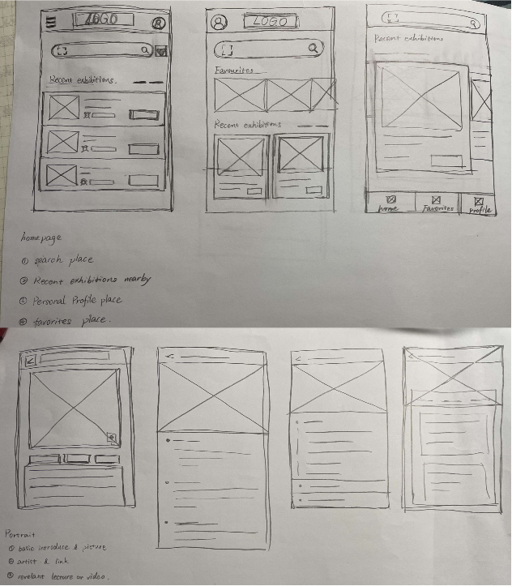
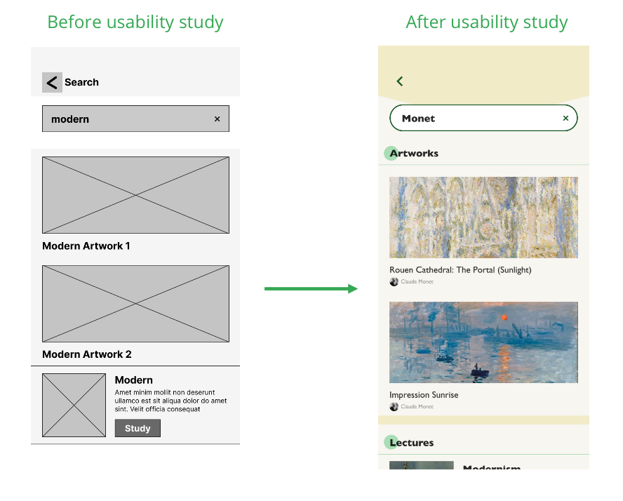
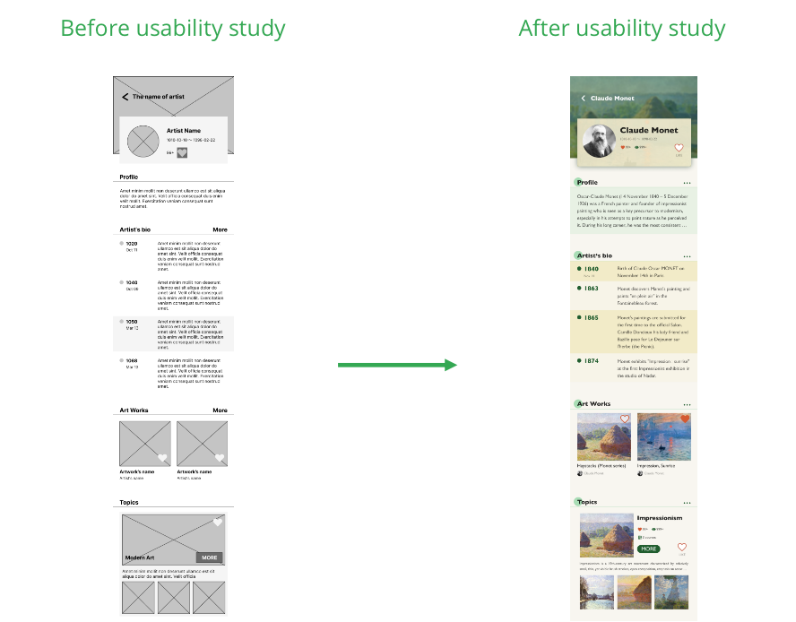

Art App
I create an app to help users to enjoy the artworks in the gallery and learn some basic art knowledge about art.
My Responsibility ⇒ interviews, paper and digital wireframing, low and high-fidelity prototyping, conducting usability studies, accounting for accessibility, and iterating on designs
User Research
I conducted interviews and created empathy maps to understand the users I am designing for and their needs. A primary user group identified through research was visitors are frustrated by the arcane technical explanation of the artworks. People who like visiting the exhibition usually couldn`t find the demonstration about the artwork they enjoy. And they are frustrated to search a lot of professional information hard to understand.
Pain Points
Unclear Introduction
Visitors want the basic introduction to their loving artworks
Lack of Information
Galleries don`t provide the systematic information about the art and artists
Lack of Interest
The provided professional introduction do not attract the visitors and frustrate them
Persona
Problem statement
Users are frustrated about the hard- understanded introduction to the artwork, and don`t know how to know the art and artists systematically.
User Journey Map
Mapping Anne’s user journey revealed how helpful it would be for users to have the art introduction which is easy understanded.
Starting the design
Paper Wireframe
Taking the time to draft iterations of each screen of the app on paper ensured that the elements that made it to digital wireframes would be well-suited to address user pain points. For the home screen, I prioritized a search bar for users to find the artwork directly.
Digital wireframes
As the initial design phase continued, I made sure to base screen designs on feedback and findings from the user research.
Low-fidelity prototype
As the initial design phase continued, I made sure to base screen designs on feedback and findings from the user research.
View the low-fi prototype here
Usability Study
Study Type :Moderated usability study
Participants :5 participants
Length :Above 10 minutes
round 1 finding
- People want clear meaning of the key words
- People want appropriate feedback after the operation
- People want appropriate feedback after the operation
round 2 finding
- People prefer bigger margin
- People want bigger serach place to use
Mockup
After the usability studies, I classified the search outcome clearly, with artworks and lectures.
I unified the name of the label and modified the presentation of the artist's life.
High fidelity Prototype
Veiw it hereAccessibility considerations
- Use the outline and divider to differentiate functional blocks
- Use the different color to emphasis
- Used detailed image to indicate the information of the artwork and artist
Takeaways
In this project, I feel that the final result of the project is quite different from what I imagined at the beginning. I found the importance of the usability study.
What the most importance is the users’ feedback and usability studies.